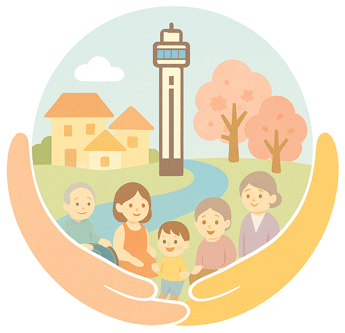

ホーム ＞ 船堀会について
船堀会について
船堀会は、平成26年の立ち上げから10周年を迎えました。
介護・福祉・医療の現場で働く私たちが、職種を越えて出会い、語り合い、学び合う場所——それが船堀会です。毎月第3木曜日に勉強会と懇親会を開催しています。
船堀会理念

- 1地域の中でたくさんの友達を作り、相互理解を深め、信頼の絆を深めよう。
- 2介護・福祉・医療で働く私たちが夢と希望と誇りと自信をもって働ける地域社会を作ろう。
- 3謙虚に学び続けよう。
会則
【第1条】目的
- 医療・介護・福祉に関わる多種他職種の学びの場・情報発信の場・交流の場として、また事業間の連携の場として活用することを目的とする。
【第2条】活動内容
本連絡会は第1条の目標達成のために次の活動を行う。
- 地域住民や多職種、行政との連携、および地域作りの支援。介護事業に限らず多種多様な職種の連携及び情報発信、研修。多職種による地域課題の発掘。レクリエーション等による多職種の交流。
【第3条】地域
- 活動は主に船堀・一之江を中心とし、中央から葛西地域、江戸川区全域とする。
【第4条】組織・構成
- 本連絡会は共に学び共に協力し合うことを目的としているため、会員は地域や職種を限定しない。また会員への連絡はメールまたはSNS等のグループで行う。
【第5条】幹事会
- 幹事会は幹事会で承認を得た者とし、代表1名、副代表2名、会計2名、書記、監査1名を幹事会メンバーから選出する。
- 任期については必要に応じその都度、幹事会で話し合うものとする。幹事会は月に1回、月初に行うものとする。
【第6条】会員について
- 氏名、住所、生年月日（住所は江戸川区内であれば会社のものでも可）の登録の協力をいただく。
- 江戸川区の『えどねっと』にて会場の予約の関係で、参加者の上記3点の登録が必要なためご協力を頂けた方。
- 会員には毎月、船堀会のご案内・研修等の資料をメールにて配布する。
【第7条】情報の取り扱いについて
- 船堀会では会員のお預かりした個人情報について、第三者に江戸川区施設予約システム「えどねっと」の登録以外には利用しないことを厳守する。
【第8条】定例会
- 全会員を対象とし、月に1回、研修やレクリエーション等を行うものとする。
- 内容は幹事会にて協議し、担当となった幹事が中心となり進行する。
【第9条】会費
- 勉強会開催時に参加者から、必要に応じ参加費等を徴収する。
【第10条】個人情報の取り扱いについて
- 船堀会では皆様からGoogleフォームやメールなどでお預かりした個人情報（氏名、事業所名、住所、電話番号、メールアドレス、生年月日、LINE等）について、以下の目的以外には使用いたしません。またお預かりしている個人情報を本人の許可なく、他者に教えたりすることもございません。
- 個人情報については船堀会にて厳重に管理させて頂きます。
- 船堀会からのご案内、アンケート
- えどねっとの登録
- 会ごとの名簿の作成
- ただし法令の定めにより提供を求められた場合を除きます。
- 個人情報等の開示、変更、削除の求めがあった場合には、ご本人であることを確認させていただいたうえで、速やかに対応します。
【第11条】事務局
- 高橋 洋介 東京都江戸川区江戸川4-2-1 訪問看護リハビリステーションここゆい内
付則
令和6年4月1日より実施する。この規約の改正、廃棄は幹事会の場で意見を求め決定する。
令和6年6月1日「個人情報の取り扱いについて」追記。
令和8年4月1日 第11条 事務局を変更。